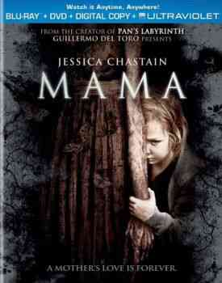

|  | Victoria (Megan Charpentier) y Lily (Isabelle Nélisse) son dos pequeñas hermanas en la situación más espeluznante: su padre (Nikolaj Coster-Waldau) ha asesinado a su madre y, aún en shock, lleva a sus hijas en un auto que maneja sin destino hasta que ocurre un accidente. Con un par de razguños nada más sale del auto con ellas, encuentra una casa abandonada, y cuando aparece la opción de acabar con sus vidas... una fuerza sobrenatural se lo impedirá. |